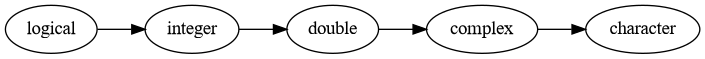

The previous chapter introduced R and gave you enough background to do some simple computations on data sets. This chapter focuses on the foundational knowledge and skills you’ll need in order to use R effectively in the long term. Specifically, it’s a deep dive into R’s various data structures and data types.
13.1 Vectors
A vector is a collection of values. Vectors are the fundamental unit of data in R, and you’ve already used them in the previous sections.
For instance, each column in a data frame is a vector. So the site_name column in the California least terns data set (Section 11.4) is a vector. Take a look at it now. You can use head to avoid printing too much. Set the second argument to 10 so that exactly 10 values are printed:
head(terns$site_name, 10)
[1] "PITTSBURG POWER PLANT"
[2] "ALBANY CENTRAL AVE"
[3] "ALAMEDA POINT"
[4] "KETTLEMAN CITY"
[5] "OCEANO DUNES STATE VEHICULAR RECREATION AREA"
[6] "RANCHO GUADALUPE DUNES PRESERVE"
[7] "VANDENBERG SFB"
[8] "SANTA CLARA RIVER MCGRATH STATE BEACH"
[9] "ORMOND BEACH"
[10] "NBVC POINT MUGU"
Like all vectors, this vector is ordered, which just means the values, or elements, have specific positions. The value of the 1st element is PITTSBURG POWER PLANT, the 2nd is ALBANY CENTRAL AVE, the 5th is OCEANO DUNES STATE VEHICULAR RECREATION AREA, and so on.
Notice that the elements of this vector are all strings. In R, the elements of a vector must all be the same type of data (we say the elements are homogeneous). A vector can contain integers, decimal numbers, strings, or any of several other types of data, but not a mix these all at once.
The other columns in the least terns data frame are also vectors. For instance, the year column is a vector of integers:
head(terns$year)
[1] 2000 2000 2000 2000 2000 2000
Vectors can contain any number of elements, including 0 or 1 element. Unlike mathematics, R does not distinguish between vectors and scalars (solitary values). As far as R is concerned, a solitary value, like 3, is a vector with 1 element.
You can check the length of a vector (and other objects) with the length function:
length(3)
[1] 1
length("hello")
[1] 1
length(terns$year)
[1] 791
Since the last of these is a column from the data frame terns, the length is the same as the number of rows in terns.
13.1.1 Creating Vectors
Sometimes you’ll want to create your own vectors. For instance, you might want to combine data from several columns (or datasets), need to pass a vector of arguments to a function, or want to use R as a calculator.
You can create vectors withe the c function. Recall that R considers individual values to be vectors, so what the c function really does is concatenate vectors. That is, it accepts any number of arguments, and combines them into a single vector:
c(1, 2, 19, -3)
[1] 1 2 19 -3
c("hi", "hello")
[1] "hi" "hello"
c(1, 2, c(3, 4))
[1] 1 2 3 4
For example, suppose you want to use the unique function to get all of the unique site names in terns:
[1] "Pittsburg Power Plant"
[2] "NA_NO POLYGON"
[3] "Alameda Point"
[4] "Kettleman"
[5] "Oceano Dunes State Vehicular Recreation Area"
[6] "Rancho Guadalupe Dunes Preserve"
[7] "Vandenberg AFB"
[8] "Santa Clara River"
[9] "Ormond Beach"
[10] "NBVC Point Mugu"
[11] "Venice Beach"
[12] "Port of LA"
[13] "Seal Beach National Wildlife Refuge"
[14] "Bolsa Chica"
[15] "Huntington Beach State Park"
[16] "Upper Newport Bay"
[17] "Camp Pendleton"
[18] "Batiquitos Lagoon"
[19] "San Elijo Lagoon"
[20] "FAA Island"
[21] "North Fiesta Island"
[22] "Mariner's Point"
[23] "Lindbergh Field/Former Naval Training Center"
[24] "Naval Base Coronado"
[25] "D Street Fill"
[26] "Chula Vista Wildlife Refuge"
[27] "Saltworks"
[28] "Tijuana Estuary"
[29] "Coal Oil Point Reserve"
[30] "Hollywood Beach"
[31] "Burris Basin"
[32] "San Diego River Mouth"
[33] "Hayward Regional Shoreline"
[34] "Montezuma"
[35] "Stony Point"
[36] "Napa Sonoma Marsh Wildlife Area Huichica Unit (Pond 7/7A)"
[37] "Eden Landing Ecological Reserve"
[38] "Bufferlands"
[39] "Fairbanks Ranch"
[40] "San Diequito Lagoon"
[41] "Salton Sea"
[42] "Saticoy United Water Conservation District"
[43] "Anaheim Lake"
[44] "Malibu Lagoon"
[45] ""
[46] "NA_2013_2018 POLYGON"
[47] "Albany Central Avenue"
If the arguments you pass to the c function have different data types, R will attempt to convert them to a common data type that preserves the information:
c(1, "cool", 2.3)
[1] "1" "cool" "2.3"
Section 13.2.2 explains the rules for this conversion in more detail.
The colon operator : creates vectors that contain sequences of integers. This is useful for creating “toy” data to test things on, and Section 13.1.2 will show that it’s important for selecting elements from other vectors. Here are a few different sequences:
1:3
[1] 1 2 3
-3:5
[1] -3 -2 -1 0 1 2 3 4 5
10:1
[1] 10 9 8 7 6 5 4 3 2 1
Beware that both endpoints are included in the sequence, even in sequences like 1:0, and that the difference between elements is always -1 or 1. If you want more control over the generated sequence, use the seq function instead.
13.1.2 Indexing Vectors
You can access individual elements of a vector with the indexing operator[ (also called the square bracket operator). The syntax is:
VECTOR[INDEXES]
Here INDEXES is a vector of positions of elements you want to get or set.
For example, let’s make a vector with 5 elements and get the 2nd element:
x =c(4, 8, 3, 2, 1)x[2]
[1] 8
Now let’s get the 3rd and 1st element:
x[c(3, 1)]
[1] 3 4
You can use the indexing operator together with the assignment operator to assign elements of a vector:
x[3] =0x
[1] 4 8 0 2 1
Indexing is among the most frequently used operations in R, so take some time to try it out with few different vectors and indexes. We’ll revisit indexing in Chapter 15 to learn a lot more about it.
13.1.3 Vectorization
Let’s look at what happens if we call a mathematical function, like sqrt, on a vector:
x =c(1, 3, 0, pi)sqrt(x)
[1] 1.000000 1.732051 0.000000 1.772454
This gives us the same result as if we had called the function separately on each element. That is, the result is the same as:
c(sqrt(1), sqrt(3), sqrt(0), sqrt(pi))
[1] 1.000000 1.732051 0.000000 1.772454
Of course, the first version is much easier to type.
Functions that take a vector argument and get applied element-by-element like this are said to be vectorized. Most functions in R are vectorized, especially math functions. Some examples include round, sqrt, exp, log, sin, cos, and tan.
Vectorized functions are often useful for transforming columns. For example, suppose we want to transform the total number of nests in the terns data:
This square root transformation can be helpful when fitting certain kinds of statistical models, because it shrinks large values in a dataset more than small ones.
Functions that are not vectorized tend to be ones that combine or aggregate values in some way. For instance, the sum, mean, median, length, and class functions are not vectorized.
Non-vectorized functions are often useful for summarizing columns. For example, we can compute the mean of the minimum breeding pairs in the terns data:
mean(terns$bp_min, na.rm =TRUE)
[1] 129.3199
A function can be vectorized across multiple arguments. This is easiest to understand in terms of the arithmetic operators. Let’s see what happens if we add two vectors together:
x =c(1, 2, 3, 4)y =c(-1, 7, 10, -10)x + y
[1] 0 9 13 -6
The elements are paired up and added according to their positions. The other arithmetic operators are also vectorized:
x - y
[1] 2 -5 -7 14
x * y
[1] -1 14 30 -40
x / y
[1] -1.0000000 0.2857143 0.3000000 -0.4000000
This means we can use arithmetic operators on whole columns. Let’s compute the average number of fledglings per nest for each row in the terns data:
terns$fl_min / terns$total_nests
[1] 1.066666667 0.050000000 0.641025641 0.333333333 0.800000000 1.888888889
[7] 0.343750000 0.409090909 0.821917808 0.253968254 0.487012987 1.008849558
[13] 1.682242991 0.000000000 0.904365904 0.176470588 0.949953661 0.220930233
[19] 0.437500000 1.069518717 0.307692308 0.357142857 0.888888889 0.634328358
[25] 0.508744038 0.794117647 NaN 0.386363636 0.376190476 0.066666667
[31] NaN 0.352272727 1.000000000 0.396825397 0.000000000 0.000000000
[37] 0.000000000 0.325301205 0.540000000 0.137931034 0.196110211 0.000000000
[43] 0.519140990 0.354368932 0.262008734 0.117647059 0.400000000 NA
[49] 0.032867133 0.185810811 NaN 0.031746032 0.000000000 0.000000000
[55] 0.238095238 0.131578947 0.034883721 0.032850242 0.000000000 0.036036036
[61] 0.166666667 0.081632653 0.030769231 0.000000000 0.254545455 0.000000000
[67] 0.000000000 0.305084746 0.000000000 0.022727273 NaN 0.444444444
[73] 0.000000000 0.108552632 0.000000000 0.337087087 0.600000000 1.333333333
[79] 0.209439528 0.000000000 0.179687500 0.182885906 0.000000000 0.000000000
[85] NaN 0.177935943 0.050847458 0.286624204 0.149253731 0.110132159
[91] 0.089108911 0.035087719 0.058823529 0.082969432 1.647058824 NaN
[97] 0.020408163 0.266666667 1.000000000 0.947368421 NaN 0.000000000
[103] 1.400000000 NA 0.830188679 0.226012793 0.541666667 0.563395810
[109] 0.580645161 1.238738739 0.251439539 0.055555556 0.337662338 0.355661882
[115] NaN 0.019230769 0.133333333 0.000000000 0.073529412 0.000000000
[121] 0.412213740 0.194444444 0.120000000 0.180000000 0.133333333 0.073170732
[127] 0.153638814 NA 0.156250000 0.000000000 0.375634518 1.400000000
[133] 0.000000000 1.000000000 1.060606061 1.000000000 0.888888889 0.000000000
[139] 0.987012987 2.000000000 0.673076923 0.322505800 0.758241758 0.261971831
[145] 0.072289157 0.066371681 0.443298969 0.777777778 0.285714286 0.241176471
[151] 0.245791246 NaN 0.071428571 0.153846154 0.190476190 0.177777778
[157] 0.266666667 0.251851852 0.252032520 0.172117040 0.192307692 0.000000000
[163] 0.134020619 0.099656357 0.000000000 0.055555556 0.314285714 0.000000000
[169] 1.062500000 1.177419355 0.000000000 2.000000000 1.250000000 NaN
[175] 1.055555556 0.000000000 0.793814433 1.166666667 0.370370370 0.156126482
[181] 0.318965517 0.396975425 0.213592233 0.413223140 0.588105727 0.200000000
[187] 0.800000000 0.064264264 0.201639344 NaN NaN 0.000000000
[193] 0.000000000 0.000000000 0.000000000 0.827338129 0.171232877 0.085245902
[199] 0.114864865 0.060606061 0.058823529 0.223880597 2.000000000 0.038461538
[205] 0.222222222 NaN 0.728323699 0.787500000 0.000000000 1.000000000
[211] 1.076923077 1.000000000 1.193548387 NaN 0.658823529 1.000000000
[217] 0.545454545 0.211783439 0.000000000 0.172413793 0.451977401 0.835962145
[223] 0.304147465 0.312500000 0.000000000 0.104190920 0.326656394 NaN
[229] 0.000000000 0.000000000 0.266666667 0.000000000 NaN NaN
[235] 0.248275862 0.240000000 0.024124067 0.143939394 0.083333333 0.051282051
[241] 0.091836735 0.333333333 1.000000000 1.808510638 0.294117647 NaN
[247] 0.690625000 1.415094340 NaN 2.000000000 1.260869565 2.000000000
[253] 0.852941176 NaN 0.388888889 0.000000000 0.333333333 0.138418079
[259] 0.000000000 0.018518519 0.120754717 0.150224215 0.688221709 0.500000000
[265] 0.615384615 0.223577236 0.433333333 NaN NaN NaN
[271] 0.000000000 0.000000000 0.341880342 0.000000000 0.666666667 0.250000000
[277] 0.297619048 0.197309417 0.126050420 0.050000000 0.076923077 0.206278027
[283] 3.000000000 NA NA NaN 0.504225352 0.311688312
[289] NaN NaN 1.428571429 NaN 0.125000000 0.000000000
[295] 0.769230769 NaN 0.200000000 0.100418410 0.000000000 0.000000000
[301] 0.062146893 0.395209581 0.150280899 0.857142857 0.000000000 0.068152031
[307] 0.093984962 NaN NA NaN 0.428571429 0.000000000
[313] 0.344827586 0.250000000 0.384615385 0.141025641 0.144578313 0.090395480
[319] 0.293103448 0.226415094 0.036363636 0.340909091 0.000000000 0.000000000
[325] 0.428571429 0.133333333 0.000000000 0.044502618 0.640211640 NaN
[331] NaN 0.913043478 NaN 0.555555556 NaN 0.190476190
[337] 0.000000000 0.000000000 0.017772512 0.000000000 0.165876777 0.330578512
[343] 0.052459016 0.166051661 0.636363636 0.200000000 0.020080321 0.060390764
[349] NaN NaN NaN 0.000000000 0.000000000 0.000000000
[355] 0.000000000 0.000000000 0.276923077 0.000000000 0.009363296 0.078947368
[361] 0.281250000 0.011111111 0.000000000 NaN NaN 0.137500000
[367] 0.103448276 NaN 1.034246575 1.388235294 NaN NaN
[373] 0.982456140 NaN 1.266666667 NaN 0.000000000 0.148325359
[379] 0.000000000 0.000000000 NaN 0.000000000 0.122047244 0.542682927
[385] 0.222929936 0.288184438 0.043478261 0.250000000 0.120675784 0.209677419
[391] NaN NaN 0.000000000 0.044871795 NaN 0.000000000
[397] 0.073170732 NaN 0.298245614 1.714285714 0.150870406 0.159722222
[403] 0.405063291 0.044444444 0.202127660 1.000000000 NaN 1.333333333
[409] 0.062500000 NaN 1.199386503 1.388235294 NaN NaN
[415] 1.183673469 NaN 0.952380952 NaN 0.500000000 0.191666667
[421] 0.000000000 0.273118280 NaN 0.925925926 0.126984127 0.025974026
[427] 0.265780731 0.325581395 0.555555556 0.000000000 0.314136126 0.485355649
[433] NaN NaN NaN 0.250000000 0.538461538 0.504201681
[439] 0.500000000 NaN 0.340000000 0.087719298 0.120307988 0.202702703
[445] 0.264367816 0.285714286 0.130268199 0.000000000 1.000000000 0.303797468
[451] 0.000000000 0.000000000 0.940170940 1.267605634 NaN NaN
[457] 1.277777778 NaN 1.318181818 NaN 0.375000000 0.000000000
[463] NaN 0.245243129 NaN 0.000000000 0.000000000 0.066037736
[469] 0.250000000 0.238549618 0.130434783 0.045454545 0.122832370 0.216867470
[475] NaN NaN NaN 0.450000000 0.041666667 0.552486188
[481] 0.000000000 NaN 0.444444444 0.090909091 0.202179177 0.170731707
[487] 0.417721519 0.310344828 0.144230769 0.000000000 2.000000000 0.063291139
[493] 0.166666667 0.000000000 1.454094293 1.784090909 NaN NaN
[499] 1.204081633 NaN 0.666666667 NaN 0.177419355 NaN
[505] 0.777777778 0.155124654 NaN 0.000000000 0.326241135 0.312500000
[511] 0.302816901 0.287356322 0.000000000 0.000000000 0.100000000 0.094760312
[517] 0.388026608 NaN NaN NaN 0.100000000 0.160000000
[523] 0.118110236 0.466666667 0.000000000 0.270270270 0.147058824 0.123399302
[529] 0.177966102 0.197368421 0.230769231 0.179347826 NaN 0.000000000
[535] 0.563380282 0.555555556 NA 0.407158837 0.986111111 0.952380952
[541] NaN 0.134615385 NaN NaN 0.285714286 NaN
[547] 0.000000000 NaN 0.526315789 0.071618037 NaN NaN
[553] 0.419354839 0.000000000 0.032258065 0.033707865 0.038291605 NaN
[559] 0.714285714 0.764705882 0.002846975 0.252890173 NaN NA
[565] NaN 0.390243902 NaN 0.170454545 0.500000000 NA
[571] 0.541666667 0.045454545 0.312710911 0.196850394 0.177083333 0.050000000
[577] 0.342222222 NaN 0.000000000 0.000000000 0.506666667 0.343750000
[583] 0.007092199 1.000000000 0.421686747 0.250000000 NaN 0.523809524
[589] 0.209621993 NaN 0.000000000 0.000000000 0.518796992 0.358974359
[595] 0.533834586 0.093023256 0.375000000 0.045454545 0.011976048 0.137426901
[601] NaN 0.000000000 0.000000000 0.168539326 0.000000000 0.684210526
[607] 0.062500000 0.035066505 0.110091743 0.072289157 0.030303030 0.078534031
[613] 0.000000000 0.133333333 0.527536232 0.785714286 0.082644628 1.117647059
[619] 0.235294118 0.446808511 NA NaN 0.195652174 0.203174603
[625] NaN 0.000000000 NaN 0.487437186 0.000000000 0.328358209
[631] 0.152542373 0.117647059 0.200000000 0.035885167 0.040145985 NaN
[637] 0.025641026 0.000000000 0.226415094 0.000000000 0.315789474 0.250000000
[643] 0.022629310 0.115384615 0.030303030 0.025641026 0.040000000 0.000000000
[649] 0.103448276 0.664367816 1.326732673 0.000000000 0.791666667 0.107142857
[655] 0.500000000 0.076923077 0.000000000 0.260869565 0.068292683 NA
[661] 0.543478261 NaN 0.016483516 0.090909091 0.000000000 0.006993007
[667] 0.214285714 0.277777778 0.266666667 0.352517986 NaN 0.162162162
[673] 0.000000000 0.392405063 NaN 0.666666667 0.333333333 0.026886383
[679] 0.000000000 0.126984127 0.044444444 0.073891626 0.000000000 0.215189873
[685] 0.173913043 0.383333333 0.513274336 0.017857143 0.905660377 NaN
[691] 0.235294118 0.384615385 NaN 0.592592593 0.248554913 NA
[697] 0.135135135 NaN 0.191919192 0.000000000 0.083333333 0.033747780
[703] 0.350000000 0.000000000 0.146496815 0.107744108 NaN 0.533333333
[709] 0.000000000 0.360902256 NaN 0.545454545 0.000000000 0.071052632
[715] 0.074074074 0.009900990 0.083333333 0.086021505 0.000000000 0.038461538
[721] 0.000000000 0.461176471 1.081967213 0.088888889 0.822222222 0.000000000
[727] 0.511111111 0.000000000 0.000000000 0.176470588 0.041533546 0.000000000
[733] NaN 0.010582011 0.035714286 0.122093023 0.203562341 0.000000000
[739] 0.000000000 0.198312236 0.070866142 NaN 0.655172414 0.183673469
[745] NaN 0.299065421 NaN 0.900000000 NaN 0.026086957
[751] 0.000000000 0.024390244 0.083333333 0.158940397 0.130434783 0.000000000
[757] 0.064516129 0.321533923 0.881944444 0.051948052 0.833333333 NaN
[763] 0.404761905 0.066666667 NaN 0.157894737 0.271276596 NaN
[769] NaN 0.000000000 0.183098592 0.315789474 0.110344828 0.000000000
[775] 0.000000000 0.750000000 0.313405797 0.337719298 NaN 0.340425532
[781] 0.282051282 0.000000000 0.000000000 NaN 1.250000000 NaN
[787] 0.125523013 0.090909091 0.084745763 0.145833333 0.204678363
13.1.4 Recycling
When a function is vectorized across multiple arguments, what happens if the vectors have different lengths? Whenever you think of a question like this as you’re learning R, the best way to find out is to create some toy data and test it yourself. Let’s try that now:
x =c(1, 2, 3, 4)y =c(-1, 1)x + y
[1] 0 3 2 5
The elements of the shorter vector are recycled to match the length of the longer vector. That is, after the second element, the elements of y are repeated to make a vector with the same length as x (because x is longer), and then vectorized addition is carried out as usual.
Here’s what that looks like written down:
1 2 3 4
+ -1 1 -1 1
-----------
0 3 2 5
If the length of the longer vector is not a multiple of the length of the shorter vector, R issues a warning, but still returns the result. The warning as meant as a reminder, because unintended recycling is a common source of bugs:
x =c(1, 2, 3, 4, 5)y =c(-1, 1)x + y
Warning in x + y: longer object length is not a multiple of shorter object
length
[1] 0 3 2 5 4
Recycling might seem strange at first, but it’s convenient if you want to use a specific value (or pattern of values) with a vector. For instance, suppose you want to multiply all the elements of a vector by 2. Recycling makes this easy:
2*c(1, 2, 3)
[1] 2 4 6
When you use recycling, most of the time one of the arguments will be a scalar like this.
13.2 Data Types & Classes
Section 11.3 introduced the idea of categorizing data into types based on sets of shared characteristics. Thinking about types can help you figure out which analyses might be appropriate, or at least possible, for your data. Types are such a helpful idea that most programming languages also use types.
In R, data objects are categorized in two different ways:
The class of an R object describes what the object does, or the role that it plays. Sometimes objects can do more than one thing, so objects can have more than one class. The class function, which debuted in Section 11.4, returns the classes of its argument.
The type of an R object describes what the object is. Technically, the type corresponds to how the object is stored in your computer’s memory. Each object has exactly one type. The typeof function returns the type of its argument.
Of the two, classes are more important than types. If you aren’t sure what an object is, checking its classes should be the first thing you do.
The built-in classes you’ll use all the time correspond to vectors and lists (which we’ll learn more about in Section 13.2.1):
Class
Example
Description
logical
TRUE, FALSE
Logical (or Boolean) values
integer
-1L, 1L, 2L
Integer numbers
numeric
-2.1, 7, 34.2
Real numbers
complex
3-2i, -8+0i
Complex numbers
character
"hi", "YAY"
Text strings
list
list(TRUE, 1, "hi")
Ordered collection of heterogeneous elements
R doesn’t distinguish between scalars and vectors, so the class of a vector is the same as the class of its elements:
class("hi")
[1] "character"
class(c("hello", "hi"))
[1] "character"
In addition, for most vectors, the class and the type are the same:
x =c(TRUE, FALSE)class(x)
[1] "logical"
typeof(x)
[1] "logical"
The exception to this rule is numeric vectors, which have type double for historical reasons:
By default, R assumes any numbers you enter in code are numeric, even if they’re integer-valued.
The class integer also represents integer numbers, but it’s not used as often as numeric. A few functions, such as the sequence operator : and the length function, return integers. You can also force R to create an integer by adding the suffix L to a number, but there are no major drawbacks to using the double default:
class(1:3)
[1] "integer"
class(3)
[1] "numeric"
class(3L)
[1] "integer"
Besides the classes for vectors and lists, there are several built-in classes that represent more sophisticated data structures:
Class
Description
function
Functions
factor
Categorical values
matrix
Two-dimensional ordered collection of homogeneous elements
array
Multi-dimensional ordered collection of homogeneous elements
data.frame
Data frames
For these, the class is usually different from the type. We’ll learn more about most of these later on.
13.2.1 Lists
A list is an ordered data structure where the elements can have different types (they are heterogeneous). This differs from a vector, where the elements all have to have the same type, as we saw in Section 13.1. The tradeoff is that most vectorized functions do not work with lists.
You can make an ordinary list with the list function:
x =list(1, c("hi", "bye"))class(x)
[1] "list"
typeof(x)
[1] "list"
For ordinary lists, the type and the class are both list. In Chapter 15, we’ll learn how to get and set list elements, and in later sections we’ll learn more about when and why to use lists.
You’ve already seen one list, the terns data frame:
class(terns)
[1] "data.frame"
typeof(terns)
[1] "list"
Under the hood, data frames are lists, and each column is a list element. Because the class is data.frame rather than list, R treats data frames differently from ordinary lists. This difference is apparent in how data frames are printed compared to ordinary lists.
13.2.2 Implicit Coercion
R’s types fall into a natural hierarchy of expressiveness:

R’s hierarchy of types.
Each type on the right is more expressive than the ones to its left. That is, with the convention that FALSE is 0 and TRUE is 1, we can represent any logical value as an integer. In turn, we can represent any integer as a double, and any double as a complex number. By writing the number out, we can also represent any complex number as a string.
The point is that no information is lost as we follow the arrows from left to right along the types in the hierarchy. In fact, R will automatically and silently convert from types on the left to types on the right as needed. This is called implicit coercion.
As an example, consider what happens if we add a logical value to a number:
TRUE+2
[1] 3
R automatically converts the TRUE to the numeric value 1, and then carries out the arithmetic as usual.
We’ve already seen implicit coercion at work once before, when we learned the c function. Since the elements of a vector all have to have the same type, if you pass several different types to c, then R tries to use implicit coercion to make them the same:
x =c(TRUE, "hi", 1, 1+3i)class(x)
[1] "character"
x
[1] "TRUE" "hi" "1" "1+3i"
Implicit coercion is strictly one-way; it never occurs in the other direction. If you want to coerce a type on the right to one on the left, you can do it explicitly with one of the as.TYPE functions. For instance, the as.numeric (or as.double) function coerces to numeric:
as.numeric("3.1")
[1] 3.1
There are a few types that fall outside of the hierarchy entirely, like functions. Implicit coercion doesn’t apply to these. If you try to use these types where it doesn’t make sense to, R generally returns an error:
sin +3
Error in sin + 3: non-numeric argument to binary operator
If you try to use these types as elements of a vector, you get back a list instead:
x =c(1, 2, sum)class(x)
[1] "list"
Understanding how implicit coercion works will help you avoid bugs, and can also be a time-saver. For example, we can use implicit coercion to succinctly count how many elements of a vector satisfy a some condition:
x =c(1, 3, -1, 10, -2, 3, 8, 2)condition = x <4sum(condition) # or sum(x < 4)
[1] 6
If you still don’t quite understand how the code above works, try inspecting each variable. In general, inspecting each step or variable is a good strategy for understanding why a piece of code works (or doesn’t work!). Here the implicit coercion happens in the third line.
13.2.3 Matrices & Arrays
A matrix is the two-dimensional analogue of a vector. The elements, which are arranged into rows and columns, are ordered and homogeneous.
You can create a matrix from a vector with the matrix function. By default, the columns are filled first:
# A matrix with 2 rows and 3 columns:matrix(1:6, 2, 3)
[,1] [,2] [,3]
[1,] 1 3 5
[2,] 2 4 6
The class of a matrix is always matrix, and the type matches the type of the elements:
x =matrix(c("a", "b", NA, "c"), 2, 2)x
[,1] [,2]
[1,] "a" NA
[2,] "b" "c"
class(x)
[1] "matrix" "array"
typeof(x)
[1] "character"
You can use the matrix multiplication operator %*% to multiply two matrices with compatible dimensions.
An array is a further generalization of matrices to higher dimensions. You can create an array from a vector with the array function. The characteristics of arrays are almost identical to matrices, but the class of an array is always array.
13.2.4 Factors
A feature is categorical if it measures a qualitative category. For example, the genres rock, blues, alternative, folk, pop are categories.
R uses the class factor to represent categorical data. Visualizations and statistical models sometimes treat factors differently than other data types, so it’s important to make sure you have the right data type. If you’re ever unsure, remember that you can check the class of an object with the class function.
When it reads a data set, R usually can’t tell which features are categorical. That means identifying and converting the categorical features is up to you. For beginners, it can be difficult to understand whether a feature is categorical or not. The key is to think about whether you want to use the feature to divide the data into groups.
For example, if you want to know how many songs are in the rock genre, you first need to divide the songs by genre, and then count the number of songs in each group (or at least the rock group).
As a second example, months recorded as numbers can be categorical or not, depending on how you want to use them. You might want to treat them as categorical (for example, to compute max rainfall in each month) or you might want to treat them as numbers (for example, to compute the number of months time between two events).
The bottom line is that you have to think about what you’ll be doing in the analysis. In some cases, you might treat a feature as categorical only for part of the analysis.
Let’s think about which features are categorical in least terns data set. To refresh your memory of what’s in the data set, take a look at the structural summary:
str(terns)
'data.frame': 791 obs. of 43 variables:
$ year : int 2000 2000 2000 2000 2000 2000 2000 2000 2000 2000 ...
$ site_name : chr "PITTSBURG POWER PLANT" "ALBANY CENTRAL AVE" "ALAMEDA POINT" "KETTLEMAN CITY" ...
$ site_name_2013_2018: chr "Pittsburg Power Plant" "NA_NO POLYGON" "Alameda Point" "Kettleman" ...
$ site_name_1988_2001: chr "NA_2013_2018 POLYGON" "Albany Central Avenue" "NA_2013_2018 POLYGON" "NA_2013_2018 POLYGON" ...
$ site_abbr : chr "PITT_POWER" "AL_CENTAVE" "ALAM_PT" "KET_CTY" ...
$ region_3 : chr "S.F._BAY" "S.F._BAY" "S.F._BAY" "KINGS" ...
$ region_4 : chr "S.F._BAY" "S.F._BAY" "S.F._BAY" "KINGS" ...
$ event : chr "LA_NINA" "LA_NINA" "LA_NINA" "LA_NINA" ...
$ bp_min : num 15 6 282 2 4 9 30 21 73 166 ...
$ bp_max : num 15 12 301 3 5 9 32 21 73 167 ...
$ fl_min : int 16 1 200 1 4 17 11 9 60 64 ...
$ fl_max : int 18 1 230 2 4 17 11 9 65 64 ...
$ total_nests : int 15 20 312 3 5 9 32 22 73 252 ...
$ nonpred_eggs : int 3 NA 124 NA 2 0 NA 4 2 NA ...
$ nonpred_chicks : int 0 NA 81 3 0 1 27 3 0 NA ...
$ nonpred_fl : int 0 NA 2 1 0 0 0 NA 0 NA ...
$ nonpred_ad : int 0 NA 1 6 0 0 0 NA 0 NA ...
$ pred_control : chr "" "" "" "" ...
$ pred_eggs : int 4 NA 17 NA 0 NA 0 NA NA NA ...
$ pred_chicks : int 2 NA 0 NA 4 NA 3 NA NA NA ...
$ pred_fl : int 0 NA 0 NA 0 NA 0 NA NA NA ...
$ pred_ad : int 0 NA 0 NA 0 NA 0 NA NA NA ...
$ pred_pefa : chr "N" "" "N" "" ...
$ pred_coy_fox : chr "N" "" "N" "" ...
$ pred_meso : chr "N" "" "N" "" ...
$ pred_owlspp : chr "N" "" "N" "" ...
$ pred_corvid : chr "Y" "" "N" "" ...
$ pred_other_raptor : chr "Y" "" "Y" "" ...
$ pred_other_avian : chr "N" "" "Y" "" ...
$ pred_misc : chr "N" "" "N" "" ...
$ total_pefa : int 0 NA 0 NA 0 NA 0 NA NA NA ...
$ total_coy_fox : int 0 NA 0 NA 0 NA 0 NA NA NA ...
$ total_meso : int 0 NA 0 NA 0 NA 0 NA NA NA ...
$ total_owlspp : int 0 NA 0 NA 0 NA 0 NA NA NA ...
$ total_corvid : int 4 NA 0 NA 0 NA 0 NA NA NA ...
$ total_other_raptor : int 2 NA 6 NA 0 NA 3 NA NA NA ...
$ total_other_avian : int 0 NA 11 NA 4 NA 0 NA NA NA ...
$ total_misc : int 0 NA 0 NA 0 NA 0 NA NA NA ...
$ first_observed : chr "2000-05-11" "" "2000-05-01" "2000-06-10" ...
$ last_observed : chr "2000-08-05" "" "2000-08-19" "2000-09-24" ...
$ first_nest : chr "2000-05-26" "" "2000-05-16" "2000-06-17" ...
$ first_chick : chr "2000-06-18" "" "2000-06-07" "2000-07-22" ...
$ first_fledge : chr "2000-07-08" "" "2000-06-30" "2000-08-06" ...
The site_name, site_abbr, and event columns are all examples of categorical data. The region_ columns and some of the pred_ columns also contain categorical data.
One way to check whether a feature is useful for grouping (and thus effectively categorical) is to count the number of times each value appears. You can do this with the table function. For instance, to count the number of times each category of event appears:
table(terns$event)
EL_NINO LA_NINA NEUTRAL
120 258 413
Features with only a few unique values, repeated many times, are ideal for grouping. Numerical features, like total_nests, usually aren’t good for grouping, both because of what they measure and because they tend to have many unique values, which leads to very small groups.
The year column can be treated as categorical or quantitative data. It’s easy to imagine grouping observations by year, but years are also numerical: they have an order and we might want to do math on them. The most appropriate type for year depends on how we want to use it for analysis.
You can convert a column to the factor class with the factor function. Try this for the event column:
This is an important way factors are different from strings (or character vectors). It ensures that if you plot a factor, the missing levels will still be represented on the plot.
Tip
You can make a factor forget levels that aren’t present with the droplevels function:
droplevels(event[1:3])
[1] LA_NINA LA_NINA LA_NINA
Levels: LA_NINA
13.3 Special Values
R has four special values to represent missing or invalid data.
13.3.1 Missing Values
The value NA, called the missing value, represents missing entries in a data set. It’s implied that the entries are missing due to how the data was collected, although there are exceptions. As an example, imagine the data came from a survey, and respondents chose not to answer some questions. In the data set, their answers for those questions can be recorded as NA.
The missing value is a chameleon: it can be a logical, integer, numeric, complex, or character value. By default, the missing value is logical, and the other types occur through coercion (Section 13.2.2):
class(NA)
[1] "logical"
class(c(1, NA))
[1] "numeric"
class(c("hi", NA, NA))
[1] "character"
The missing value is also contagious: it represents an unknown quantity, so using it as an argument to a function usually produces another missing value. The idea is that if the inputs to a computation are unknown, generally so is the output:
NA-3
[1] NA
mean(c(1, 2, NA))
[1] NA
As a consequence, testing whether an object is equal to the missing value with == doesn’t return a meaningful result:
5==NA
[1] NA
NA==NA
[1] NA
You can use the is.na function instead:
is.na(5)
[1] FALSE
is.na(NA)
[1] TRUE
is.na(c(1, NA, 3))
[1] FALSE TRUE FALSE
Missing values are a feature that sets R apart from most other programming languages.
13.3.2 Infinity
The value Inf represents infinity, and can be numeric or complex. You’re most likely to encounter it as the result of certain computations:
13/0
[1] Inf
class(Inf)
[1] "numeric"
You can use the is.infinite function to test whether a value is infinite:
is.infinite(3)
[1] FALSE
is.infinite(c(-Inf, 0, Inf))
[1] TRUE FALSE TRUE
13.3.3 Not a Number
The value NaN (“not a number”) represents a quantity that’s undefined mathematically. For instance, dividing 0 by 0 is undefined:
0/0
[1] NaN
class(NaN)
[1] "numeric"
Like Inf, NaN can be numeric or complex.
You can use the is.nan function to test whether a value is NaN:
is.nan(c(10.1, log(-1), 3))
Warning in log(-1): NaNs produced
[1] FALSE TRUE FALSE
13.3.4 Null
The value NULL represents a quantity that’s undefined in R. Most of the time, NULL indicates the absence of a result. For instance, vectors don’t have dimensions, so the dim function returns NULL for vectors:
dim(c(1, 2))
NULL
class(NULL)
[1] "NULL"
typeof(NULL)
[1] "NULL"
Unlike the other special values, NULL has its own unique type and class.
You can use the is.null function to test whether a value is NULL: